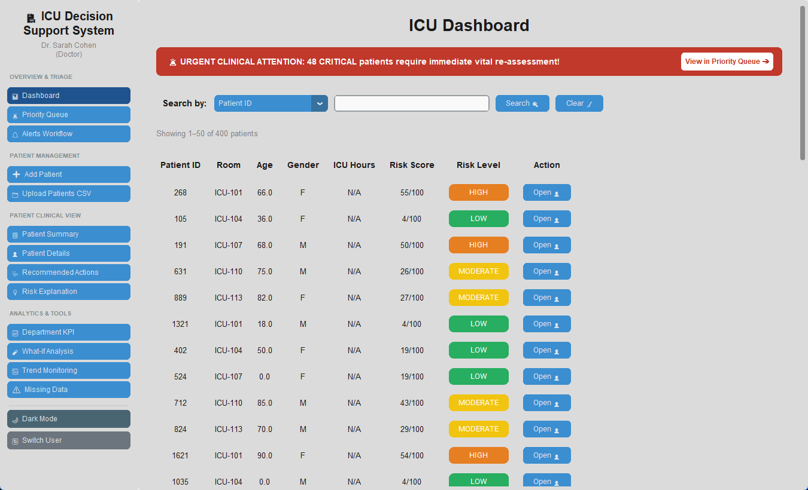
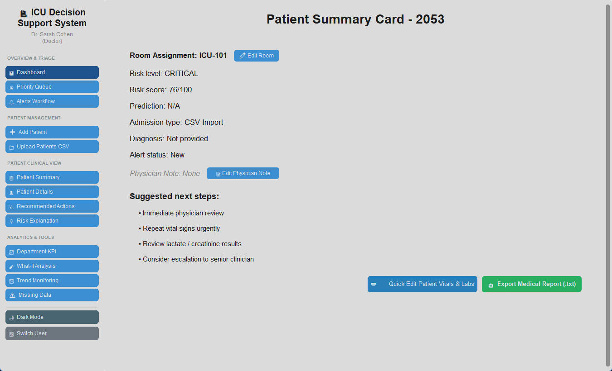

🩺 Doctor — Full Clinical Access
Doctors have unrestricted access to all clinical operations: editing patient vitals and labs, adding physician notes, updating room assignments, ordering STAT labs, and logging protocol overrides. All of these actions are unavailable to nurses and are role-protected.
doctor1doctor123Login window — select Doctor and enter credentials
- Red urgent banner at the top — alerts about critical patients needing immediate re-assessment
- Patient table with columns: Patient ID, Room, Age, Gender, ICU Hours, Risk Score, Risk Level
- Open button for each patient — click to open the patient card
- Search bar to filter by Patient ID, room number, diagnosis, and more

- Room assignment, risk level, risk score, prediction, admission type, diagnosis, alert status
- Physician Note — blank until manually entered
- Suggested next steps — generated by clinical alert rules
- Action buttons: Edit Room, Edit Physician Note, Quick Edit Vitals & Labs, Export Medical Report

Edit Room dialog — doctors only
Physician Note dialog — saved and included in the exported report
- Insert Top Drivers into Physician Note — automatically prepends the top risk factors to the note
- View Recommended Actions for Drivers — navigates to the actions panel

- Mark an action as Done
- Log a Protocol Override — record a clinical justification note when deviating from the recommended protocol
Recommended Actions — mark done or log an override (doctor only)
Edit Vitals dialog — risk score recomputes automatically after saving
.txt file and contains the most current clinical data at the time of export.Exported report — includes all clinical data and physician note
Department KPI — at-a-glance overview of the entire ICU
💉 Nurse — Monitoring & Read Access
Nurses can view all clinical data and perform continuous monitoring, but cannot make clinical changes. Actions that require physician authorisation are protected and display a "Permission Denied" message if attempted.
Doctor vs. Nurse — permission differences
Both roles see exactly the same data — the same Dashboard, the same patient cards, the same risk scores and reports. The difference is write access: only a doctor can introduce clinical changes or document treatment decisions. This ensures that every change to a patient's clinical record passes through a responsible physician.
| Action | Doctor 🩺 | Nurse 💉 |
|---|---|---|
| View Dashboard & patient table | ✓ | ✓ |
| Open Patient Summary Card | ✓ | ✓ |
| View risk score & Risk Explanation | ✓ | ✓ |
| View Recommended Actions | ✓ | ✓ |
| Export Medical Report (.txt) | ✓ | ✓ |
| Priority Queue & Alerts Workflow | ✓ | ✓ |
| What-if Analysis & Trend Monitoring | ✓ | ✓ |
| Department KPI | ✓ | ✓ |
| Edit Vitals & Labs | ✓ | ✗ blocked |
| Add / edit Physician Note | ✓ | ✗ blocked |
| Edit room assignment | ✓ | ✗ blocked |
| Log Protocol Override | ✓ | ✗ blocked |
| Place STAT lab order | ✓ | ✗ blocked |
| Add Clinical Flag in Trend view | ✓ | ✗ blocked |
nurse1nurse123Login as Nurse — select Nurse role
Priority Queue — critical patients surface at the top
Alerts Workflow — manage and acknowledge active alerts
Trend Monitoring — charts available; flag feature is doctor-only
Missing Data — visible to nurses; STAT Order is doctor-only
⚙️ Administrator — User Management
The Administrator is responsible for managing user accounts — adding, and removing users. Administrators are not expected to perform clinical work; their role is access control and system security. The Admin Console is accessible only to the Admin role.
admin1admin123Login as Administrator — select Admin role
Click Admin Console at the bottom of the left navigation to manage users.
Sidebar with Admin Console entry — exclusive to Admin role
- Add User form — username, password, full name, and role (Doctor / Nurse / Admin)
- User table — lists all existing users with name, role, and a Delete button
| Full Name | Username | Role | Action |
|---|---|---|---|
| Dr. Sarah Cohen | doctor1 | Doctor | |
| Nurse Daniel Levi | nurse1 | Nurse | |
| System Administrator | admin1 | Admin |
Admin Console — add and remove user accounts
- Dark Mode — toggles the interface to a dark theme, useful in low-light environments
- Switch User — returns to the login window without closing the application, ideal for shift handovers
to return to the login screen
Switch User and Dark Mode — at the bottom of the sidebar
⚠️ Research / educational prototype. Not a certified medical device and not validated for real clinical decision-making.